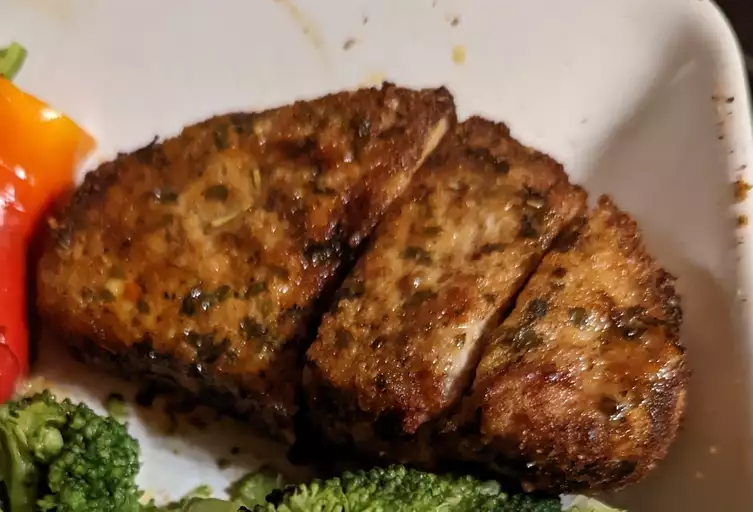

Easy Air Fryer Pork Chops

Use your trusty air fryer to make the best (and easiest) pork chops of your life. Trust us — once you try this air fryer pork chop recipe, you'll never go back to your old method again.
Air frying has become more popular overtime so let's ditch the traditional route and go to the newer and tastier route.
Ingredients
- ½ cup grated Parmesan cheese
- 1 teaspoon paprika
- 1 teaspoon garlic powder
- 1 teaspoon kosher salt
- 1 teaspoon dried parsley
- ½ teaspoon ground black pepper
- 4 (5 ounce) boneless pork chops
- 2 tablespoons extra virgin olive oil
Cooking Steps
- Preheat the air fryer to 380 degrees F (190 degrees C).
- Combine Parmesan cheese, paprika, garlic powder, salt, parsley, and pepper in a flat shallow dish; mix well.
- Coat each pork chop with olive oil. Dredge both sides of each chop in the Parmesan mixture and set on a plate.
- Place 2 chops in the basket of the air fryer and cook for 10 minutes; flipping halfway through cook time. Transfer to a cutting board and let rest for 5 minutes. Repeat with remaining chops.
- Enjoy your Air Fryed Pork Chops!